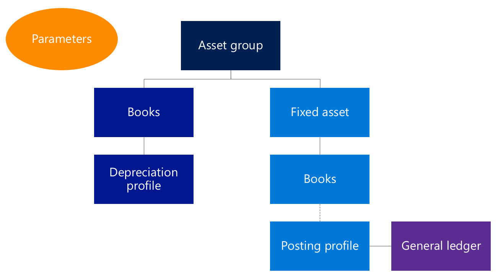

Set up fixed assets
This topic provides an overview of the setup of the Fixed assets module.
Overview
Parameters control the general behavior in Fixed assets.
Fixed asset groups let you group your assets and specify default attributes for every asset that is assigned to a group. Books are assigned to fixed asset groups. Books track the financial value of a fixed asset over time by using the depreciation configuration that is defined in the depreciation profile.
Fixed assets are assigned to a group when they are created. By default, the books that are assigned to the fixed asset group are then assigned to the fixed asset. Books that are configured to post to the general ledger are associated with a posting profile. Ledger accounts are defined for each book in the posting profile and are used when fixed asset transactions are posted.

Depreciation profiles
You should first set up depreciation profiles. In the depreciation profile, you configure how the value of an asset is depreciated over time. You must define the method of depreciation, the depreciation year (calendar year or fiscal year), and the frequency of depreciation. For more information, see Set up and create depreciation profiles.
Books
After you set up depreciation profiles, you must create the required books for your assets. Each book tracks an independent financial lifecycle of an asset. Books can be configured to post associated transactions to the general ledger. This configuration is the default setting, because it's typically used for corporate financial reporting. Books that don't post to the general ledger post only to the Fixed asset subledger and are typically used for tax reporting purposes.
A primary depreciation profile is assigned to every book. Books also have an alternative or switchover depreciation profile, if this type of profile is applicable. To automatically include the fixed asset book in depreciation runs, you must enable the Calculate depreciation option. If this option isn't enabled for an asset, the depreciation proposal skips the asset.
You can also set up derived books. The specified derived transactions are posted against the derived books as an exact copy of the primary transaction. Therefore, derived transactions are typically set up for acquisitions and disposals, not for depreciation transactions. For more information, see Set up value models.
Fixed asset posting profiles
After you set up books, you can create the posting profile. The posting profile must be defined by book, but it can also be defined at a more detailed level. For example, you can define the posting profile for the combination of a book and a fixed asset group, or even for an individual fixed asset book. By default, the ledger accounts that are defined are used for your fixed asset transactions.
You must define the ledger accounts that are used during the disposal processes, both disposal sales and disposal scraps. At the time of disposal, the fixed asset transactions that were previously posted are reversed out of the original accounts. The net amounts are then moved to the appropriate account for gain and loss for asset disposal. To help guarantee that transactions are correctly reversed, you must set up accounts for each type of transaction that you use in your business. The main account should be the original account that you set on the posting profile for the transaction type, and the offset account should be your gain and loss for disposal account. The exception is the net book value. In this case, both the main account and the offset account should be set to the gain and loss for disposal account. For more information, see Set up fixed asset posting profiles.
Fixed asset groups
The Fixed asset group field is the only required field when you create a fixed asset. The value of this field determines the default value of several informational fields for the asset. Books are set up so that a default book is assigned to each asset in a group. In this way, attributes that you set for the books can be specific to a group of assets. These attributes include the service life and the depreciation convention.
You can also define special depreciation allowances, or bonus depreciation, for a specific combination of a fixed asset group and a book. You must assign a priority to the special depreciation allowance to specify the order that allowances are calculated in when multiple allowances are assigned to a book. For more information, see Set up fixed asset groups.
Journal names
On the Journal names page, you must create the journal names that should be used with the Fixed assets journal. You must set the Journal type field to Post fixed assets. Set the Voucher series field so that the journal names are used for the Fixed assets journal. Fixed assets journals should not use the One voucher number only setting, because a unique voucher number is required for several automated processes, such as transfers and splits.
Fixed asset parameters
The last step is to update the fixed asset parameters.
The Capitalization threshold field determines the assets that are depreciated. If a purchase line is selected as a fixed asset, but it doesn't meet the specified capitalization threshold, a fixed asset is still created or updated, but the Calculate depreciation option is set to No. Therefore, the asset won't be automatically depreciated as part of the depreciation proposals.
One important option is named Automatically create depreciation adjustment amounts with disposal. When you set this option to Yes, the asset depreciation is automatically adjusted, based on the depreciation settings at the time of asset disposal. Another option lets you deduct cash discounts from the acquisition amount when you acquire fixed assets by using a vendor invoice.
On the Purchase orders FastTab, you can configure how assets are created as part of the purchasing process. The first option is named Allow asset acquisition from Purchasing. If you set this option to Yes, asset acquisition occurs when the invoice is posted. If you set this option to No, you can still put a fixed asset on a purchase order (PO) and invoice, but the acquisition won't be posted. Posting must be done as a separate step, from the Fixed assets journal. The Create asset during product receipt or invoice posting option lets you create a new asset "on the fly" during posting. Therefore, the asset doesn't have to be set up as a fixed asset before the transaction. The last option, Check for fixed assets creation during line entry, applies only to purchase requisitions.
You can configure reason codes so that they are required for changes to a fixed asset or for specific fixed asset transactions.
Finally, on the Number sequences tab, you define number sequences for fixed assets. The Fixed asset number sequence can be overridden by the Fixed asset group number sequence if it has been specified.
For more information, see Create a fixed asset.